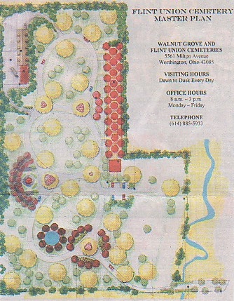

|
Plans to expand Flint Cemetery are about one step ahead of the undertaker.
With Walnut Grove Cemetery full and only 15 to 20 grave sites available at Flint, this summer's planned improvements at Flint will come just in time, cemeteries superintendent Tom Kayati said.
If work proceeds as planned, approximately 500 new grave sites will be ready in the fall.
"It is getting down to the nitty-gritty, it's going to be close," Kayati said.
The public is invited to hear more about plans to expand Flint Cemetery at a meeting set for Thursday, April 8, at 7 p.m. at the Sharon Town Hall, 137 E. Granville Road.
The cemetery, which is owned by Sharon Township and managed by the Walnut Grove/Flint Union Cemeteries Board of Trustees, is located on approximately 11 acres on the north side of Flint Road.
Today, the cemetery includes several hundred graves on two acres just inside the Flint Road entrance, and about nine acres of flat, treeless expanse.
Long-term plans call for turning the land into a modern cemetery with space for the burial of 7,757 bodies or cremated remains.
Besides traditional plots, there will be a columbarium garden for above-ground interment of cremated remains; in-ground burial space for cremated remains; a meditation garden; infant memorial; and a meditation pond.
Paved drives will loop through the cemetery, which will feature extensive landscaping, including many pine trees around the perimeter to provide privacy from and for abutting homes and offices.
Development will be done in stages over the next 100 to 150 years, which is how long the cemetery is expected to provide burial space for the Worthington community.
The first stage will include road work, drainage, grading, and the laying out of approximately 500 grave spaces.
Estimated cost is $230,580.
"We will do as much as we can afford to do," Kayati said.
The cost of development will be covered by profits from the sale of graves and tax dollars provided by inside millage paid by all residents of Sharon Township, including those living in Worthington.
The project will be advertised for bids beginning next week, with bid opening set for May 7.
Construction should begin within 60 days, Kayati said.
Flint began as a private cemetery for the Gardner family, with the first burial there in 1821.
Many early members of the African-American community in the Flint area are buried in the cemetery, which also includes an entryway to a tunnel that was part of the Underground Railroad.
The cemetery was turned over to Sharon Township in 1947 and became partner cemetery with Walnut Grove in 1969. In 1956 and 1960, township trustees purchased adjoining vacant land with the future in mind.

Where do you want to go? Select your destination:
|